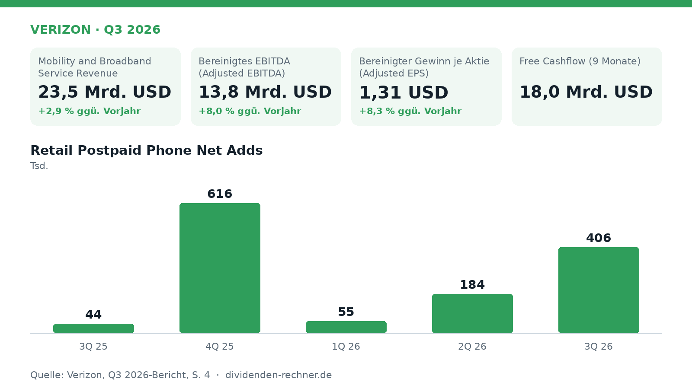

Zahlen

Verizon steigert bereinigtes EPS und hebt Jahresziele für 2026 an
Verizon verzeichnet im dritten Quartal 2026 Zuwächse bei Service-Umsatz und bereinigtem EPS. Die Jahresprognose wurde in mehreren Punkten angehoben.

Der US-Telekommunikationskonzern Verizon Communications hat seine Zahlen für das dritte Quartal 2026 vorgelegt. Das Unternehmen verzeichnete ein Umsatzplus in den Kernbereichen Mobilfunk und Breitband sowie eine Steigerung des bereinigten operativen Ergebnisses. Auf Basis dieser Entwicklung passte das Management zudem Teile der Jahresprognose für das Gesamtjahr 2026 nach oben an.

Umsatz- und Ergebnisentwicklung auf Non-GAAP-Basis
Im abgelaufenen Quartal stieg der Umsatz im Bereich Mobility and Broadband Service Revenue um 2,9 % von 22,8 Mrd. USD im Vorjahreszeitraum auf 23,5 Mrd. USD. Auch die operativen Ertragskennzahlen legten zu. Das bereinigte EBITDA (Adjusted EBITDA, eine Non-GAAP-Kennzahl) belief sich auf 13,8 Mrd. USD, was einem Anstieg um 8,0 % gegenüber dem Vorjahreswert von 12,8 Mrd. USD entspricht.
Der bereinigte Gewinn je Aktie (Adjusted EPS, ebenfalls Non-GAAP) verbesserte sich im Jahresvergleich um 8,3 % auf 1,31 USD nach 1,21 USD im dritten Quartal 2025. Unbereinigte GAAP-Werte für Umsatz und Periodenüberschuss wurden in der Präsentation nicht aufgeschlüsselt, sondern lediglich auf die Überleitung auf der Investor-Relations-Website verwiesen.
Operative Kennzahlen im Mobilfunk und Breitband
Auf operativer Ebene verzeichnete Verizon im Mobilfunkgeschäft einen Nettozuwachs von 406.000 Retail-Postpaid-Telefonkunden (Retail Postpaid Phone Net Adds). Im Vorjahresquartal 3Q 25 hatte dieser Wert noch bei 44.000 gelegen. Die Kündigungsquote im Postpaid-Telefonbereich (Wireless Retail Postpaid Phone Churn) verringerte sich im Jahresvergleich um 4 Basispunkte auf 0,94 %.
Bei den Retail-Postpaid-Konten insgesamt verbuchte der Konzern 137.000 Neuzugänge, was einem Zuwachs von 313.000 gegenüber dem Vorjahresquartal entspricht. Die Zahl der Postpaid-Geräteupgrades sank hingegen um 20,3 % auf 3,3 Mio. Im Breitbandgeschäft betrugen die Nettozugänge im dritten Quartal 314.000 Anschlüsse, nach 322.000 im Vorjahreszeitraum.
Cashflow, Verschuldung und Dividenden
Für die ersten neun Monate des Geschäftsjahres 2026 wies Verizon einen operativen Cashflow (Cash flow from operations) von 29,9 Mrd. USD aus, nach 28,0 Mrd. USD im Vorjahreszeitraum. Die Investitionen in Sachanlagen (Capital expenditures) lagen in den ersten neun Monaten bei 11,9 Mrd. USD gegenüber 12,3 Mrd. USD im Vorjahr.
Daraus ergab sich für die ersten neun Monate ein freier Cashflow (Free Cashflow, Non-GAAP) von 18,0 Mrd. USD im Vergleich zu 15,8 Mrd. USD in der Vorjahresperiode. Für Dividendenzahlungen wandte das Unternehmen in den ersten neun Monaten 8,8 Mrd. USD auf (Vorjahr: 8,6 Mrd. USD). Eine Dividende je Aktie weist der Bericht nicht aus, sodass sich die konkrete Payout Ratio je Anteilsschein aus den Präsentationsdaten nicht ablesen lässt. Für Aktienrückkäufe fielen in den ersten neun Monaten 2026 4,0 Mrd. USD an, nachdem im Vorjahreszeitraum keine Rückkäufe stattfanden.
Ein wesentlicher Aspekt bleibt die Verschuldung: Die Gesamtverschuldung (Total debt) stieg per Ende September 2026 auf 166,2 Mrd. USD nach 146,8 Mrd. USD im Vorjahr. Die unbesicherten Nettoverbindlichkeiten (Net unsecured debt) wuchsen von 112,0 Mrd. USD auf 123,7 Mrd. USD. Das Verhältnis von unbesicherten Nettoverbindlichkeiten zum bereinigten EBITDA lag bei 2,3x nach 2,2x im Vorjahreszeitraum.
Angepasste Prognose für 2026
Verizon passte seine Zielspannen für das Gesamtjahr 2026 in mehreren Bereichen an. Für die Postpaid Phone Net Adds erwartet das Management nun 1,1 Mio. bis 1,2 Mio. (zuvor: obere Hälfte von 750.000 bis 1 Mio.). Das Wachstum der Mobility and Broadband Service Revenues soll in der oberen Hälfte der bisherigen Spanne von 2,5 % bis 3 % liegen. Beim bereinigten EPS wird nun ein Plus von 7 % bis 7,5 % anvisiert (zuvor: 6 % bis 7 %). Der Ausblick auf das Wachstum des Free Cashflow liegt nun bei annähernd 12 % (zuvor: 9 % bis 10 %). Die Investitionsprognose (Capex) blieb mit 16,0 Mrd. bis 16,5 Mrd. USD unverändert. Die Prognose berücksichtigt seit dem 20. Januar 2026 die Ergebnisse der übernommenen Frontier Communications Parent, Inc.
Die wichtigsten Zahlen im Überblick
| Kennzahl | Wert | Veränderung zum Vorjahr | Quelle |
|---|---|---|---|
| Mobility and Broadband Service Revenue | 23,5 Mrd. USD | +2,9 % | S. 5 |
| Bereinigtes EBITDA (Adjusted EBITDA) | 13,8 Mrd. USD | +8,0 % | S. 5 |
| Bereinigter Gewinn je Aktie (Adjusted EPS) | 1,31 USD | +8,3 % | S. 5 |
| Free Cashflow (9 Monate) | 18,0 Mrd. USD | – | S. 6 |
Quelle: Verizon, Pressemitteilung zum Q3 2026 vom 2026-10-26. Keine Anlageberatung.
Hinweis: Dieser Text dient der allgemeinen Information und ist weder Anlage-, Steuer- noch Rechtsberatung. Kapitalanlagen sind mit Risiken verbunden, bis hin zum Totalverlust.